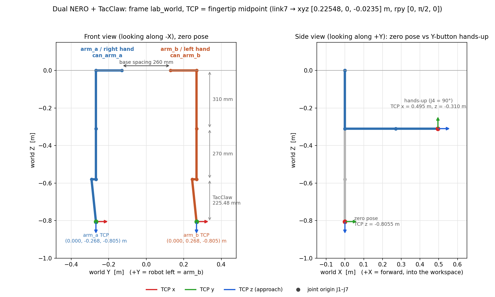

功能
一套完整的双臂遥操作：从启动、只读核对到真机执行，每一步都有明确的门槛。
两种 VR 输入
XRoboToolkit（PICO，USB adb reverse），控制器位姿归一化到头显水平朝向；或 OpenArmX 官方 Quest APK（Wi-Fi UDP 5100）。
Grip 离合
按住 Grip 接管同侧机械臂（相对锚定），松开立即停止该侧新命令，重新按下重新锚定。
Trigger 夹爪
Trigger 线性映射到 TacClaw 开合（0 → 全开 1000，1 → 全闭 0），不依赖 Grip。
预设动作
右手 B 双臂回零位；左手 Y 双臂 hands-up（J4 = 90°）。动作中按任意 Grip 立即打断。
分级运行
--check 离线模型检查 → --shadow 只求解不发布 → --execute 真机。
失效即停
输入超时 0.3 s、反馈超时 0.25 s、非有限数或 IK 异常都会停止新命令；XRT 输入中断会撤销 Grip 授权。
系统链路
VR 输入先转换成 OpenArmX 兼容的 ROS 2 话题，再经过 IK、姿态约束和限幅，分别下发到两台 NERO 和两只夹爪。
adb reverse :63901 · xrobotoolkit_bridge.py（Grip 互锁 + 头显朝向归一化）:5100 · 官方 C++ openarmx_teleop_bridge_vr/pico_{left,right}_controller/* · /vr/head/posenerox_openarmx_teleop.nodeXR → 机器人坐标基 → OpenArmX Pinocchio IK（双 NERO 模型）→ 低肘姿态包络 → 关节步进限幅arm_b (can_arm_b) · 右手 → arm_a (can_arm_a)装配与 TCP
下图由 tools/render_frames_diagram.py 对 models/source/nero_dual_tacclaw.urdf 做正运动学直接生成，与 IK 使用的模型一致。

世界坐标系 lab_world
| 轴 | 方向 |
|---|---|
| +X | 前方（工作区） |
| +Y | 机器人左侧（arm_b） |
| +Z | 竖直向上；原点在两基座中点 |
装配参数
| 项目 | 值 |
|---|---|
arm_a 基座 | xyz [0, −0.130, 0] m · rpy [π/2, π/2, 0] |
arm_b 基座 | xyz [0, +0.130, 0] m · rpy [−π/2, π/2, 0] |
| 基座间距 | 260 mm |
| 肩部外伸（J1） | 138 mm |
| 大臂 J2 → J3 | 310 mm（J4 与 J3 同原点） |
| 小臂 J4 → J5 | 270 mm |
| 腕部偏置 J6 → J7 | 23.5 mm |
| 硬件零位 | 写入关节 origin；直接使用编码器角度 |
TCP（指尖中点）
| 项目 | 值 |
|---|---|
| link7 → TCP | xyz [0.22548, 0, −0.0235] m · rpy [0, π/2, 0] |
| TCP z 轴 | 接近方向（零位向下，hands-up 朝 +X） |
| 零位 TCP | (0, ±0.268, −0.8055) m |
| hands-up TCP | (0.4955, ±0.268, −0.310) m |
| TacClaw 外形 | 长 194.48 mm · 宽 124.45 mm · 行程 100 mm |
VR → 机器人坐标基
robot X ← −XR Z # 操作者前方 → 机器人前方 robot Y ← −XR X # 操作者左方 → 机器人左方 robot Z ← +XR Y # 上 → 上
平移与姿态共用矩阵 [[0,0,-1],[-1,0,0],[0,1,0]]。操作者与机器人同向站立时，手的运动就是 TCP 的运动；不同头显的水平朝向差异用 --input-yaw-deg 校准。
TacClaw 几何是根据 V1.0 说明书和实物照片估计的，不是厂商的标定 CAD，只用于运动学，不能用来做碰撞规划。
NERO 适配
IK 核心和 VR 输入语义来自 OpenArmX。下面这些是针对 NERO 和这套双臂装配做的适配。
| 模块 | 适配内容 |
|---|---|
| 运动学模型 | 双臂装配 URDF：基座间距、安装旋转、硬件零位、TacClaw TCP。生成 IK 模型时只改名（arm_b/arm_a → left/right），并去掉 visual/collision，不做关节符号或零位偏移。 |
| 左右映射 | 左手 → arm_b，右手 → arm_a；14 维与 2 × 7 维之间只调整顺序。 |
| 坐标基 | 用针对这套装配标定的 NERO/XR 坐标基替换 OpenArmX 默认矩阵，提供 --input-yaw-deg 做朝向校准。 |
| 驱动接口 | Grip 跟随走 control/joint_states 快速模式；B/Y 预设走 control/move_j 固件位置控制，因为快速模式在腕部负载下实测 J4 残差 2.1°。命令门在反馈和负载就绪后才打开，退出时先关命令门再失能电机。 |
| 固件负载 | NERO V1.2.1 的负载码与 pyAgxArm 里的 Piper 枚举不同，所以直接发 CAN 0x477 原始帧，按 TacClaw 1.010 kg 写 half 档。 |
| 姿态约束 | 低肘包络：肘高、|J2|、|J3| 上限。IK 解超出包络时保持上一条安全命令；J2/J3/J4 有单独的正则权重。 |
| 预设动作 | B 回零；Y 为 J4 = min(90°, URDF 上限)。所有关节误差 ≤ 1° 且持续 5 个周期才判定到位。 |
| TacClaw | HMAC 认证，校验编码器标定、速度/力矩和 watchdog。夹爪故障只保持夹爪输出，不会停掉 NERO 手臂。 |
快速开始
需要 Ubuntu 22.04、ROS 2 Humble 和 Python 3.10。头显连接的详细步骤见 XRoboToolkit 启动手册。
安装与构建
git clone --recursive https://github.com/Johnny-lauHM/nero-vr-teleop.git cd nero-vr-teleop export NEROX_PYTHON=$(which python) # Python 3.10 bash scripts/install_python_deps.sh bash scripts/build.sh # 驱动 + UDP bridge → .runtime/ ./nerox_teleop.sh --check # 离线加载双臂模型与 IK
Shadow 只读核对
驱动只发布反馈、不使能电机；按住 Grip 时日志里的 solves 递增、publishes=0。
./start_teleop.sh --shadow --input-backend xrobotoolkit
真机执行
先确认空间净空、急停可用，没有其他进程占用同一 CAN。
./start_teleop.sh --execute --input-backend xrobotoolkit
# 带双 TacClaw
./start_teleop.sh --execute --input-backend xrobotoolkit \
--with-tacclaw --tacclaw-clearance-confirmed --tacclaw-speed 50
手柄操作
XRT 输入的 Grip 接管阈值为 0.9；首次使用或输入中断后，需要先完全松开双侧 Grip ≥ 0.25 s。
--shadow 核对方向，第一次 execute 只做小幅运动，并始终保证物理急停可用。